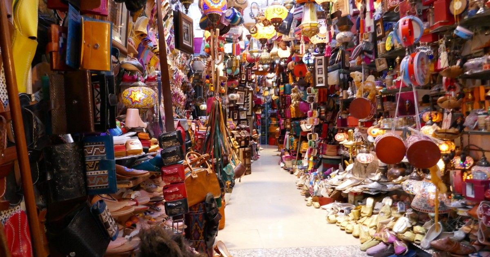

Houmt Souk est la medina de Djerba, elle se situe dans la partie nord de l'ile et est composee de nombreux hotels de luxes, de restaurants et d'un souk-couvert (marche aux puces ouvert jour et nuit). De nombreux touristes s'y rendent chaque annee car etant la plus grande ville de l'ile, elle est la plus attractive.


Le souk-couvert de Houmt Souk est un marche fixe ouvert toute la journée et egalement la nuit. Les commercants ne ferment pas leurs magasins mais l'acces au souk est cependant ferme la nuit de minuit à 6 heures du matin. On y trouve beaucoup d'echoppes attrappe-touriste comme des vendeurs de souvenirs ou d'habits typiques des pays du magrebe à petits prix. Mais dans la partie plus au centre de la ville, on peut également y trouver des marches de poissons et de fruits et legumes.
